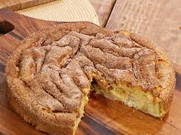

Bolo de maça com canela

Ingredientes:
- 2 xícaras de açúcar
- 1 xícara de óleo - de preferência para milho ou canola
- 4 ovos inteiros
- 2 xícaras de farinha de trigo
- 3 maçãs, sem casca, picadas
- 1 colher de sopa de fermento para bolo
- 1 colher de café de canela em pó
- 1 punhado (a gosto, opcional) de uvas passas
- Açúcar e canela para untar
- Bata no liquidificador o açúcar, os ovos e o óleo.
- Despeje a mistura em uma tigela e acrescente a farinha, misture até a massa ficar uniforme.
- Adicione a canela, as uvas passas, o fermento e as maçãs picadas.
- Leve para assar em forno aquecido. Utilize forma de buraco no meio, untada com açucar e canela (ou, pode ser untada apenas com farinha).
- Asse em forno baixo, por aproximadamente 1 hora e 30 minutos.
- O tempo de forno pode variar dependendo do seu fogão.
- Ponto de faca limpa.